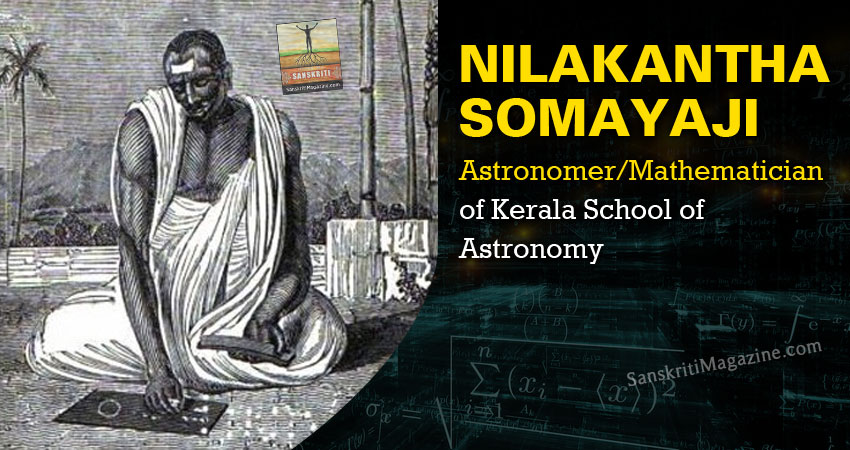

Welcome to the Mathematical World!
Nilakantha Somayaji
Kerala School Astronomer, Mathematician, and Pioneer of Quasi-Heliocentric Models
Nilakantha Somayaji (1444 – 1544 CE) was a distinguished figure in Indian mathematics and astronomy, renowned for advancing the legacy of Mādhava and shaping the intellectual foundations of the Kerala School of Mathematics and Astronomy. Born in Trikkandiyur in present-day Kerala, India, he belonged to the Nambudiri Brahmin lineage, and the title “Somayaji” signifies one who performed the prestigious Vedic Soma sacrifice. His lifetime of scholarship synthesized observation, computation, and Vedic tradition, producing works that anticipated concepts of modern astronomy and calculus.
His magnum opus, the Tantra Samgraha (c. 1501 CE), is a comprehensive treatise covering planetary theory, eclipses, celestial motion, and trigonometry. In it, he proposed a quasi-heliocentric model in which Mercury, Venus, Mars, Jupiter, and Saturn revolve around the Sun, which in turn revolves around the Earth—an idea that anticipated Copernican insights by decades while preserving geocentric elements.
Nilakantha extended Mādhava’s infinite series methods, refined trigonometric tables with higher precision, and made early contributions to the understanding of derivatives and rates of change in astronomical contexts. His corrections for planetary motion involved ideas conceptually similar to modern Taylor series expansions. He also developed practical tools such as Chandra Vākya (Moon sentences) and Gola (spherical astronomy) for astronomical calculations, which were used by Kerala scholars for centuries.
- Authored Tantra Samgraha, a foundational work in Indian astronomy
- Proposed a quasi-heliocentric planetary model decades before Copernicus
- Extended infinite series and refined trigonometric tables
- Applied early concepts of derivatives to planetary motion
- Developed practical computation techniques like Chandra Vākya and Gola
Nilakantha’s other significant texts include the Aryabhatiya Bhashya, a commentary on Aryabhata integrating Mādhava’s insights, and the Golasāra on spherical astronomy. His meticulous observation, rigorous logic, and mathematical innovation influenced later Kerala scholars such as Jyesthadeva and Achyuta Pisharati, leaving a legacy that bridged the worlds of traditional Sanskrit scholarship and pioneering scientific thought.